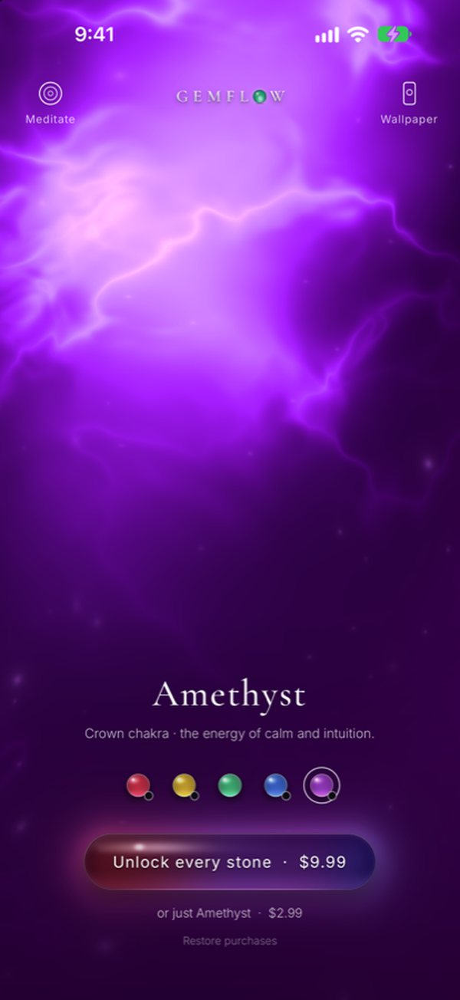

Frequencies · 963 Hz
963 Hz: the “God frequency”, and what we actually know
963 Hz is a high, clear tone that vibrates 963 times a second. Frequency lists call it the “God frequency” and pair it with the crown chakra. It was not one of the original six Solfeggio tones, and no study has tested it on its own. Below: where it came from, the name, safety, and how to listen.
Where 963 Hz sits among the Solfeggio tones
The full list of nine, with where each came from: Solfeggio frequencies explained.
| Hz | Syllable* | Gemflow stone |
|---|---|---|
| 396 | Ut | Ruby · root |
| 417 | Re | — |
| 528 | Mi | Citrine · solar plexus |
| 639 | Fa | Emerald · heart |
| 741 | Sol | Sapphire · throat |
| 852 | La | — |
| 963 | later | Amethyst · crown |
* Syllables as assigned by Horowitz (1999). 963 Hz was added to the list later. Chakra pairings are the common modern ones and vary between sources.
The basics
What is 963 Hz?
963 Hz means 963 vibrations per second. In standard tuning (A above middle C = 440 Hz) it falls between B♭5 (932 Hz) and B5 (988 Hz), a little closer to B5: about 44 cents, or just under half a semitone, flat of it. It is the highest of the nine Solfeggio frequencies and the one most lists pair with the crown chakra.
The history
Where did 963 Hz come from?
Not from the original list. The six Solfeggio tones made famous by Leonard Horowitz’s Healing Codes for the Biological Apocalypse (1999) run from 396 to 852 Hz, each tied to a syllable of the medieval hymn Ut queant laxis. 963 Hz has no syllable. It appears in later lists, which added it to give seven tones, one per chakra, and later still 174 and 285 Hz to make nine. We could not find who first added 963 Hz or when, so we do not name anyone.
The name
Why is 963 Hz called the “God frequency”?
Many lists call 963 Hz the “frequency of the gods” or link it to the pineal gland and “oneness”. These are labels passed from list to list. We found no original author for them and no study behind them. The likely reason is simpler: it is the top of the scale, and the top chakra, the crown, is traditionally the one tied to the spiritual.
The research
Does 963 Hz do anything?
We found no peer-reviewed study that tested 963 Hz on its own. The only Solfeggio tone with even a small human study is 528 Hz: nine adults had lower cortisol after five minutes of piano music tuned to it. Calm music and slow breathing do help many people relax, and 963 Hz can be part of that. Claims that it activates the pineal gland or opens a “third eye” have no evidence behind them.
Source: Akimoto K et al., Effect of 528 Hz Music on the Endocrine System and Autonomic Nervous System, Health 10(9), 2018
Safety
Is 963 Hz dangerous?
No more than any other sound. It is an ordinary audible tone, higher than most, so it can feel sharp at volume. The only real risk is loudness: the WHO and ITU safe-listening standard suggests keeping personal audio around 80 decibels or lower, for no more than 40 hours a week. Keep it soft enough that you could talk over it.
Source: WHO–ITU, Global standard for safe listening devices and systems (H.870, 2019)
How to listen
What does 963 Hz sound like?
A high, clear tone, close to the B two octaves above middle C, like a soft whistle or the ring of a small bell. On its own it can feel piercing, so most people keep it quiet under music: slow piano, singing bowls, or rain. It suits the end of the day. Ten minutes with your eyes closed and slow breathing is plenty.
963 Hz in Gemflow
Amethyst: the 963 Hz stone

Amethyst in the Gemflow app. The light is rendered live, not a video.
Gemflow turns your phone into a living crystal. Amethyst is the calmest of its five stones and carries 963 Hz: a soft violet light you can touch and guide, and a Meditate mode where the 963 Hz tone sits quietly beneath slow guqin and real singing bowls while the stone breathes with you. More about the stone: amethyst, the crown chakra stone. It is for relaxation, not a medical product.
Questions
What is 963 Hz?
A sound that vibrates 963 times a second, a little below the B two octaves above middle C. It is the highest of the nine Solfeggio frequencies and is usually paired with the crown chakra.
Why is 963 Hz called the God frequency?
It is a label repeated across frequency lists, together with links to the pineal gland and “oneness”. We found no original author for it and no research behind it.
Is 963 Hz one of the original Solfeggio frequencies?
No. The original six, made famous by Leonard Horowitz in 1999, are 396, 417, 528, 639, 741 and 852 Hz. 963 Hz was added in later lists; we could not find by whom.
What are the benefits of 963 Hz?
There is no research on 963 Hz itself. People use it as a quiet, high tone for meditation and winding down, and calm sound with slow breathing helps many people relax. It is not a treatment.
Is 963 Hz dangerous?
No more than any other sound. Because it is high, keep the volume low; the WHO–ITU safe-listening standard suggests around 80 decibels or lower.
Which chakra and crystal go with 963 Hz?
Most lists pair 963 Hz with the crown chakra. In Gemflow it belongs to amethyst, the violet crown stone.
Sources
- Leonard G. Horowitz, Healing Codes for the Biological Apocalypse (Tetrahedron, 1999).
- Akimoto K, Hu A, Yamaguchi T, Kobayashi H. Effect of 528 Hz Music on the Endocrine System and Autonomic Nervous System. Health 10(9), 1159–1170 (2018).
- WHO–ITU, Global standard for safe listening devices and systems, ITU-T H.870 (2019).
© 2026 Gemflow · Home · Solfeggio frequencies · 396 Hz · 528 Hz · 639 Hz · 741 Hz · 963 Hz · Chakra stones and frequencies · Ruby · Citrine · Emerald · Sapphire · Amethyst · Privacy